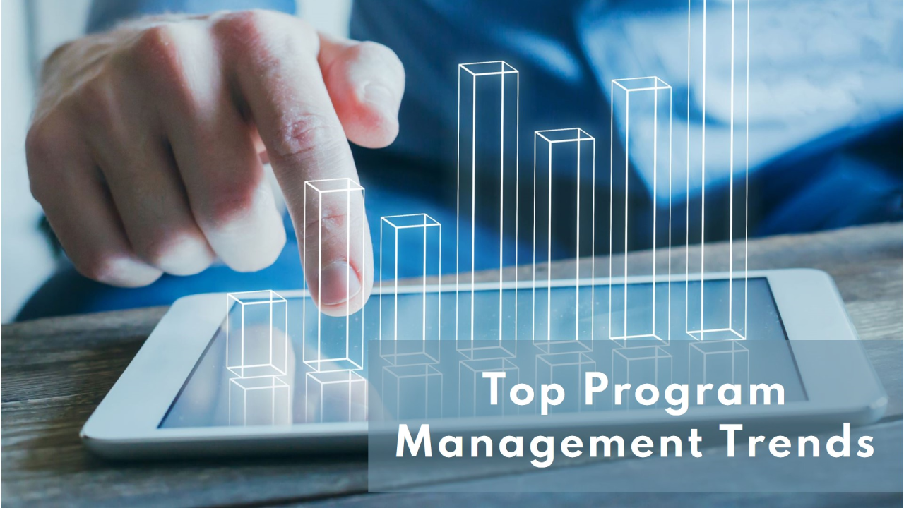
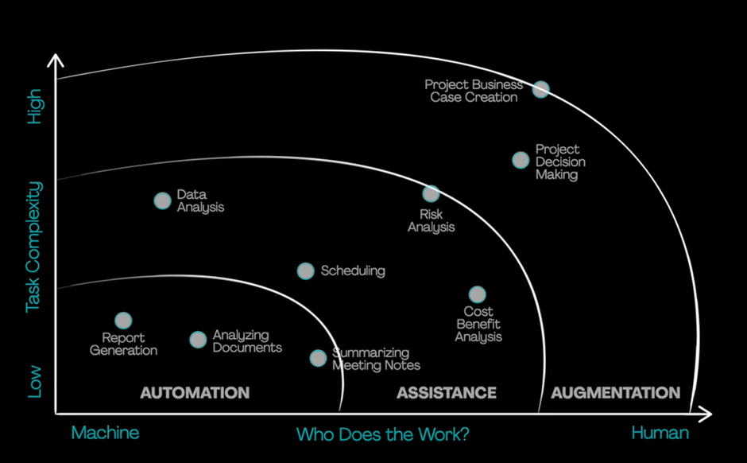

7 Top Program Management Trends to watch out for in 2025

In this fast-paced, rapidly evolving business environment, the strategic business initiatives keep changing to constantly align themselves with customers & business expectations. Given the ushering era of technological innovation we live in, this dynamism is witnessed more than ever before. This paves the way for an exponential increase of programs, coupled with their extremely daunting challenge to be successful in such a VUCA environment, putting program teams under massive pressure. To excel in such an ecosystem, it’s imperative for PMs to be cognizant and stay ahead of the emerging trends. In this writeup, we’ll delve into a few of the key trends that PMs need to be aware of going into 2025 and beyond:
Adoption of Hybrid Frameworks: Integration of Agile and waterfall methodologies is gaining a lot of traction and has become a need of the hour when it comes to delivering complex programs. PMs need to be adept at tailoring these approaches, as per the program need to deliver program outcomes effectively & efficiently.
Content Creation: Gen AI can transform mundane product data into compelling product titles, attributes, and descriptions. Research says ~80% of the content is created that’s on par with what humans could write, and 10% is better, while 10% of it is worse. It’s fictionalized content—something the model creation companies are improving on to ensure that it’s not injected into the systems.
Shorter program lifecycles: There is a dire need to shorten the program lifecycle to achieve time-to-market as one of the major strategic objectives and answer customers’ needs faster than ever. PMs need to pivot and innovate their ways to optimize their program’s critical path while balancing speed with quality. They will need to streamline processes, prioritize the right tasks early in the lifecycle, and have strong rigor around quality and testing to avoid having product issues late in the cycle.
AI-Driven Decision-Making: There is a meteoric rise in Gen AI tools that PMs can leverage to perform their complex & strategic tasks. PMs stay at the crossroads of strategy, execution, and delivery to deliver value to the business. By strategically combining AI tools and understanding prompting techniques, PMs can forecast risks, optimize resource allocation, and enhance team collaboration through real-time insights, thus improving program outcomes. Gen AI can support decision-making with many interdependencies and variables. Expect to see more AI-powered tools integrated into project planning, risk management, and performance tracking.

Automating the routine tasks: Gen AI can automate the tasks that are low in complexity and require little human intervention in their final output, like report generation, analyzing documents with multiple types of data, and summarizing meeting notes. It can also be utilized for assisting PMs in anticipating and analyzing risks, performing cost-benefit analysis, and planning and scheduling activities, leaving PMs to focus most of their time & efforts on strategic activities & value creation.
Soft Skills and Emotional Intelligence: If Gen-AI assists in activities like planning, scheduling, forecasts, and analysis, PMs need to focus on human elements like spotting burnouts, boosting the team’s motivation and morale, and improving productivity by possessing high EQ. Also, by having strong communication skills, empathy, and adaptability, PMs can drive collaboration, stakeholder engagement, resolve conflicts, and foster strong team relationships.
Data-driven program management: Given the volatility and uncertainty around the business need and customer demands, the demand for real-time data and metrics continues to grow. PMs can leverage these real-time metrics to derive actionable insights into program performance, benefits management, stakeholder satisfaction, and resource allocation.
Risk Management approach: An approach towards risk management is evolving beyond identifying and mitigating risks to anticipating opportunities in uncertain environments. Program managers will increasingly adopt proactive approaches, using AI-based scenario planning and simulation tools to navigate complex challenges.
So, over the next decade, the project management labor force in seven sectors is expected to grow by 33 percent. It’s going to create nearly 22 million jobs around the world. As per one of the PMI research studies, only 33% of the org has adopted gen-AI tools for PM-level tasks that are being used mainly for documentation, summaries, and rephrasing. This substantiates the fact that there is a lot of room for Gen-AI’s adoption in the program management space. The future of program management is brighter with a lot of opportunities to dwell into, and hence it’s imperative for individuals to keep upskilling themselves in domains like AI, data science, and other emerging technologies. These skills, coupled with domain expertise, go a long way for PMs in accelerating their careers by driving innovation, excellence, and collaboration.
Thanks for reading . Please feel free to share your comments and feedback.